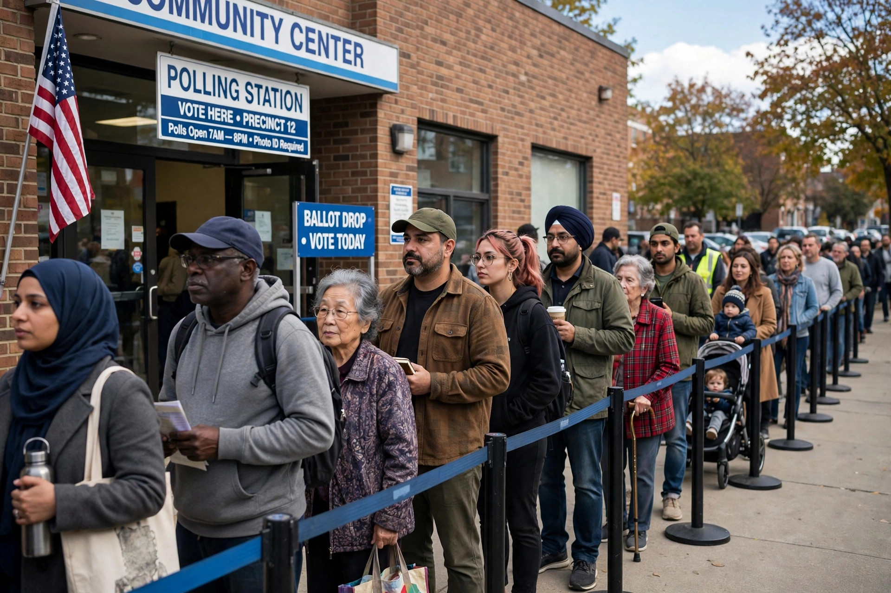

Voter suppression

Voter suppression is a strategy used to influence the outcome of an election by discouraging or preventing specific groups of people from voting. It is distinguished from political campaigning in that campaigning attempts to change voting behaviour by persuasion, while voter suppression attempts to reduce voting by those who might vote against the suppressor's interest.
Tactics
Commonly cited tactics include strict voter identification laws, reductions in early voting periods, closures or relocations of polling places, purges of electoral rolls, restrictions on mail-in voting, and the spreading of misinformation about voting dates or procedures. Felony disenfranchisement laws, which bar people convicted of crimes from voting, are also frequently discussed in this context.
History in the United States
In the Reconstruction-era and Jim Crow South, devices such as poll taxes, literacy tests, grandfather clauses and white primaries were used to disenfranchise African American voters despite the Fifteenth Amendment. The Voting Rights Act of 1965 outlawed many of these practices and imposed federal preclearance on jurisdictions with a history of discrimination; the preclearance formula was struck down by the Supreme Court in Shelby County v. Holder (2013), after which several states enacted new ID requirements and other measures that critics describe as suppression and supporters describe as election security.
Debate
Scholars disagree about the size of suppression effects: studies generally find that strict ID laws reduce turnout modestly, with effects concentrated among voters without qualifying identification, while measures such as polling-place closures and long queues can impose significant time costs. The term itself is politically contested, and the same law may be described as suppression by opponents and as integrity protection by proponents.
See also: Voting rights, Voter suppression, Election monitoring, Disenfranchisement.